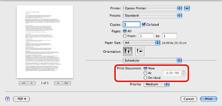
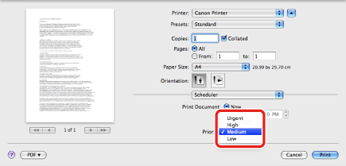

Setting the Print Document Time
You can specify the time to start printing, as well as the printing priority.
1.
From the [File] menu of the application software, select [Print].
The [Print] dialog box is displayed.
2.
The [Scheduler] preferences pane is displayed.
3.
Specify when to print the document.

If you select [At], specify the time to start printing.
4.
Select [Urgent], [High], [Medium], or [Low] printing priority.
